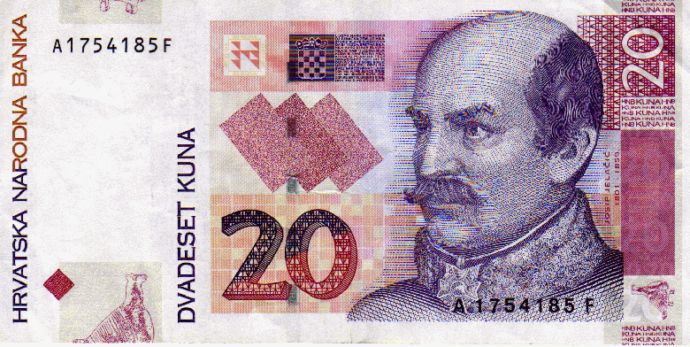
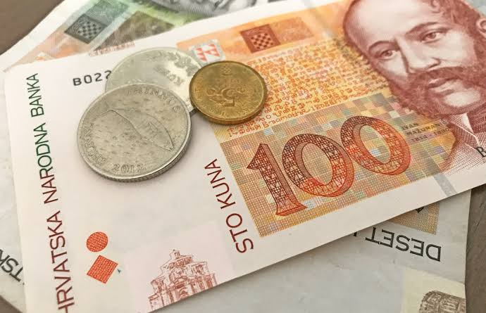
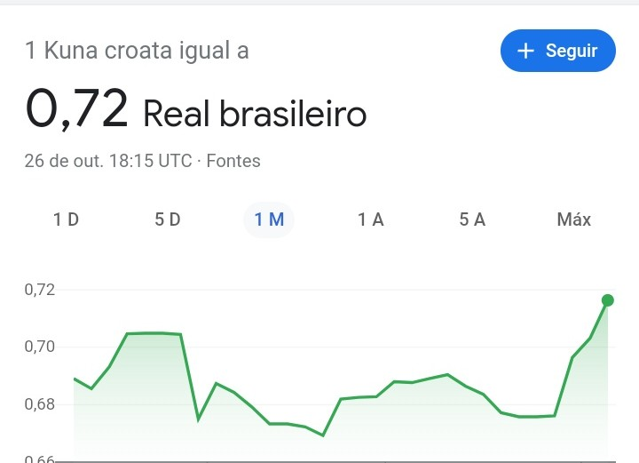

MOEDA

Uma das maiores duvidas de quem esta com uma viagem programada a Croacia e saber qual moeda levar. A moeda oficial croata nao e o euro, mesmo fazendo parte da Uniao Europeia. Sua moeda se chama kuna e no Brasil voce nao consegue encontra-la nas casas de cambio para comprar, por isso nem vale a pena perder tempo procurando.
Qual moeda levar para a Croacia?
Os meios de pagamento aceitos na Croacia sao os seguintes:
- Kunas;
- Euros;
- Dolares americanos;
- Cartao de credito;
- Cartao de debito;
- Cartao pre-pago.

Kuna significa marta, em referencia ao antigo uso de peles de marta como unidades de valor no comercio medieval, e a sua abreviacao no mercado internacional e HRK.

Valor do KUNA convertido em REAL
Voltar